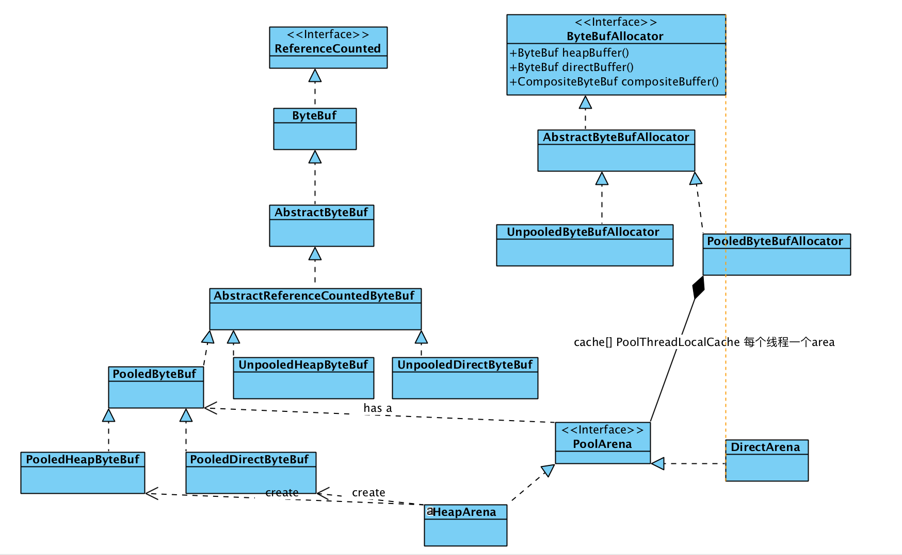
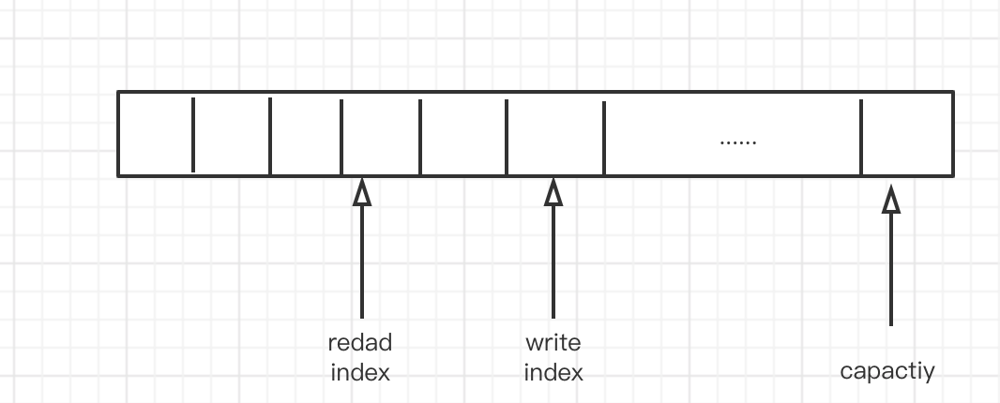

回顾一下之前使用Netty 进行开发的一个百万物联网设备网关,其中我觉得里面最好用的就是Netty 的ByteBuf,从源码整体的设计回顾一下
ByteBuf 分类
在Netty中他的ByteBuf 一共有 有4 种类型吧
从他所在的内存区域来划分:
- Heap java 堆内存
- Off Heap java 的堆外(跟DirectBuffer 一样)
从是否进行池话来看: - Pooled
- Unpooled
所用总共就有4类 - Pooled Heap
- Unpooled Heap
- Pooled off heap
- Unpoop off heap
整个层次结构

ReferenceCounted 用于引用计数,就是专门针对pool 的
ByteBuf 是一个操作的抽象,定义了read write 的一些一些方法
AbstractReferenceCountedByteBuf 就是对上面一些封装,资源的回收的
底层就有 PooledByteBuf UnpooledHeapByteBuf UnpooledDirectByteBuf
ByteBufAllocator 是一个专门用于allocat 各种buffer,可以理解为一个抽象工厂
对于具体的抽象工厂他有UnpooledByteBufAllocator PooledByteBufAllocator 的实现
其中PooledByteBufAllocator 里面含有一个PoolArena ,他是每一个线程都有自己独立的PoolArena ,这样的设计也降低了线程资源的并发需要一些同步带来的复杂设计,已经性能降低
PoolArena 里面包含了PooledByteBuf ,而到他们分别的子类PooledHeapByteBuf PooledDirectByteBuf 和 HeapArena DirectArena 具体去实现create 操作
这里也是用了 桥接的设计模式在里面 PooledByteBuf PoolArena 进行一个连接
PooledByteBufAllocator 关联了PoolArena 从而 将factory 和具体的生成的product 进行一个结合
ByteBuf 的具体实现
一般当我们数据到来了,io 线程指向decode里面可以是使用的是Unpooled.headBuffer() ,因为我们这个需要在业务里面进行不断的对他进行操作
如果是进行io 的话,使用Direct buf 这样减少io 的copy
这仅仅以Unpooled.headBuffer 例子
它的里面其实一个 byte[] array; 数组用于存放真正的数据
当我们对他进行具体的read 和write 的时候其实是操作的是readIndex writeIndex
基类 AbstractByteBuf
看一下他的read short
|
因为short 占用2 个字节,所以他会 readIndex+=2,读操作就是对readIndex 进行
同理写是对writeIndex
|
如下图

当read index 超过 wriete index 会有一个 数组越界的异常
capacity 是当前的容量,这个容量是扩容的,最大容量是int 的最大值
ByteBuf 与ByteBuffer 对比
- 首先 ByteBuf 他是读写分离的,(read index write index 是分开的)
ByteBuffer 他是金有个 postion(当前的的位置) limit (如果是可读,表示当前最大的读的位置) capacity 需要读写切换的时候需要调用flip 函数,进行转换,操作很麻烦且容易出错,若两次连续调用则就没有数据可读
ByteBuffer 里面是用的是一个final byte [] 不能进行扩容,ByteBuf 可以进行扩容,并且扩容的时候为多线程使用了自旋+cas 操作保证了thread safe
- ByteBuf 还可以进行pool,使用reference count